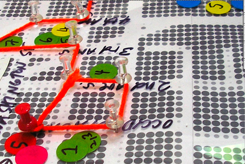
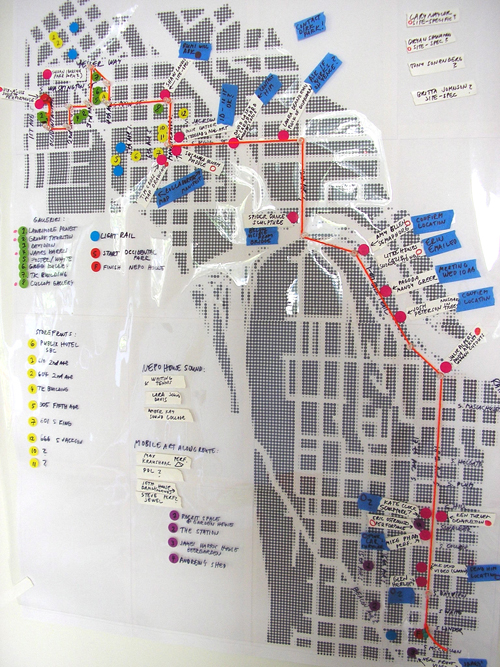
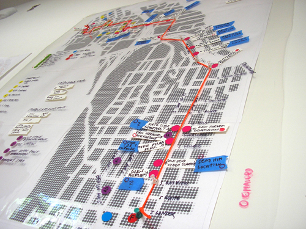
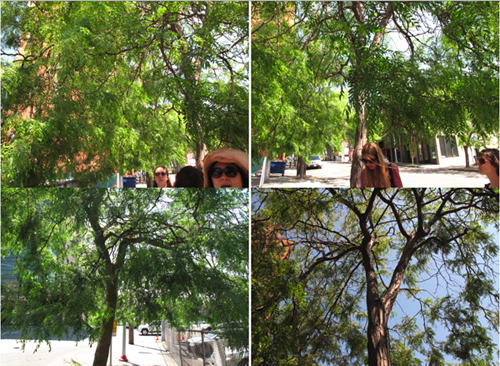
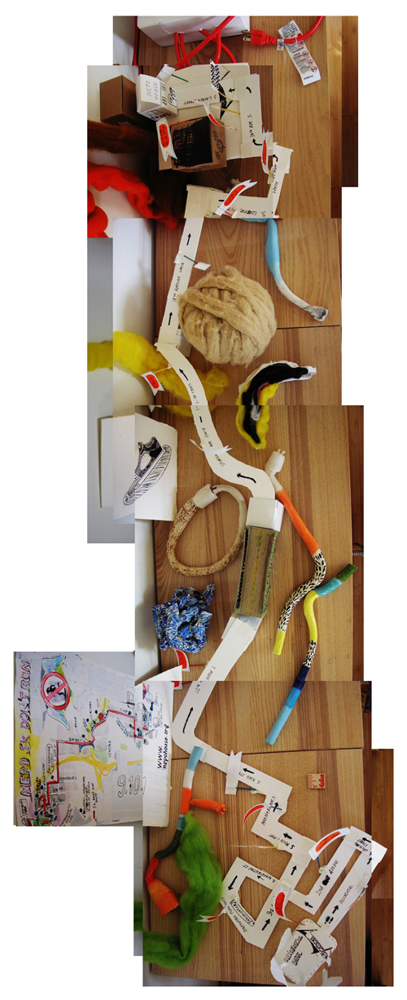
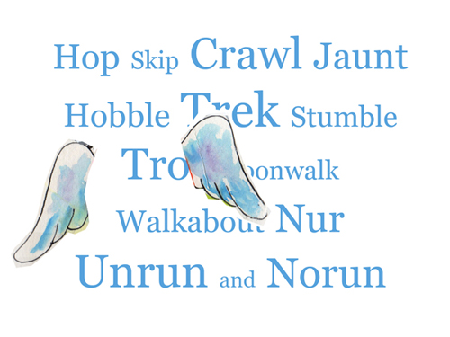
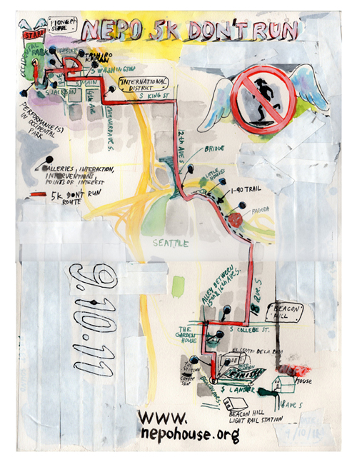

Pretty awesome NEPO 5k DON'T RUN trailer by Brad Vanderburg. Starring Bond Huberman, Greg Plumis, Todd Jannausch, Scott Hotchkiss and Klara Glosova.
____________________________________________________________Maps!
   ____________________________________________________________Report from the field: Where do we stand?
Update as of 8/11/2011
The walk is interesting in and of itself; what struck me while walking the route was the contrast of urban and suburban environment. Starting in the urbaness of Pioneer Square (equal parts gritty and businessy), heading through ID which of course is a chapter with a flavor of its own, followed by the underworld of the I-90 underpath (inhabited by homeless), emerging to find sweeping views from the 12th avenue bridge (so high above it all), grassy park (where you just want to lay down and not move, not go any further, which could be a problem on a sunny day!), then enter the neighborhood with its inconsistent block to block feel where you can find - among other treasures - one pink chrysler FOREVER parked on the corner. In fact this mix of many diverse environments (and the human equivalent of the wide spectrum of flora and fauna) within a relatively short distance reminded me of Grand Tetons.
It is a pleasant walk, people should plan for it to be a whole afternoon outing (plus don't forget to add an evening of art viewing and party activities). Start is at 2:00 pm in Occidental Park and with all the stops (for art and bubble tea) we expect people to arrive on Beacon Hill around 6:00 pm. Some sooner, some later. Some I expect will cheat and arrive on Beacon Hill by Light Rail.
For the honest ones among us there will be several distinct parts of the walk:
Start in Occidental Park
Vis-a-Vis Society will do a performance here, most likely a poetic survey on the theme of "unruning". This will also serve as a check-in point/registration for the (not)race where people receive maps and information. T-shirts will be available for purchase. Additional and completely necessary paraphernalia such as medals, bracelets and numbers will be available at Soil Art Gallery and maybe elsewhere.
Pioneer Square
This will feel more like a regular gallery art walk. Most of the area galleries will be open and participating. Galleries will have their September exhibitions open during NEPO 5k DON'T RUN. In addition to that we will use a poem by local poet Susan Parr, each line will be printed out as a barcode and displayed in the windows of participating galleries. People on the walk can scan the barcodes on their smart phones and collect the entire poem if they visit all the galleries.
ID
Ollie Glatzer's thread and nail drawings on the telephone poles will connect Pioneer square area with the Interantiona District. Cullom Gallery (on Main) will serve as a pit stop for (don't)runners - artists/drawers on the sidelines will draw on people and/or hand out hastily drawn sketches as hydration or nourishment to help participants refuel for the rest of the 5K (it's definitely uphill from here). Dirk Park's brand new gallery will be freshly open. Shawn Landis, Larry Naylor and Eric Olson will make site specific installations at Danny Woo Community Gardens (corner of Main and Maynard). Connecting our reality with other realms Tim Cross will set up Beacon somewhere in the vicinity. Another hub in this area will be the Hing Hay Park (Maynard and King). A major component of the walk involves a Herzog-inspired encounter for those people will be completing the race as a team. We would like to extend a special invitation to your organization and encourage you to participate in this healthy competition. It will earn you a highly desirable prize that will make everyone else jealous. So be sure to find Encounters at the End of the Hing Hay Park on the map and show your solidarity. We look forward to seeing you there! Also nearby, artists Susanna Bluhm Callahan and Christopher Buening will make you make drawings by not running through a puddle. From there the route goes up King St - stop by The Wing Luke Museum Marketplace, mention the code words "Don't Run", and receive a 10% discount on a drink and snack to refuel and a free temporary tattoo! Then watch out: artwork by Baso Fibonacci and David Lasky might be lurking under the I-90 underpass.
Over the 12th ave bridge and I-90 bike trail
Following the beautiful views from Jose Rizal bridge, the park along the I-90 bike trail will be a pleasant stop on the way packed with site specific artwork and performances by Leanne Grimes, Amy-Ellen Flatchestedmama Trefsger, Erin Shafkind, Kate Clark, Laura Dean and Ryan Worsley, Mandy Greer (in the Korean pagoda) and noisemakers in trees by Josh Peterson. Big wooden cutouts by Julie Alpert and Andy Arkley will point the way to Beacon Hill where the bike path meets 18th ave south.
Beacon Hill
Walking up 18th ave s you will be likely to run into some more art surprises. Utilizing sheds, concrete blocks, garages and old cars artists will transform this stretch of the route by staging various interventions and performances - Mike Pham, Eric Ostrowski, Amanda Manitach, Zack Bent, Ken Turner, Glenn Herlihy, Saya Moriyasu and Jeff McGrath, Jessie Wilson, Maggie Carson Romano, Hanita Schwartz and Britta Johnson.
There are other not-so-stationary projects by not-so-stationary artists like Seth Damm, Rob Zverina, Max Kraushaar and Sean McElroy, Tony Sonnenberg, music and sounds by Emily Pothast and David Golightly that will interact with and entertain don't runners along the way.
NEPO House
will host another blowout the-whole-house-is-turned-up-side-down multimedia show. The show starts at 6 pm. Artworks by many Seattle artist - Mike Simi, Joey Veltkamp, Debra Baxter, Serrah Russell,Troy Gua, Matthew Offenbacher, Chauney Peck, Izzie Clingels, Sharon Arnold, Daphne Stergides, Ian Toms, Francesca Lohman, Carolina Silva, Leo Berk and more - it's entirely possible that I'm forgetting somebody - will be on display around the house. Serrah Russell is working on crowd-curate interactive installation for the entry room (participating artits include Claire Cowie, Nathan Lincoln, Ellen Garvens, Hannah Russell and Amelia Hooning).
Looks like we will have plenty of video pieces this year, including projects by Matt Hilger, Lauren Klenow and Robin Crookall, Neal Fryet, Mike Estabrook and live Skype transmission by Nuala Ni Flathuin (from Ireland).
In addition to that - like we won't have enough people already! - we have invited many local art professionals to be an integral part of this show. The idea is to broaden the concept of the words active and activity to include all or most external activities artists engage in. Essentially to bring to the forefront and place on a level ground all activities and people that work behind the scenes. John Boylan, Jim Demetre and Jen Graves - from the bathtub by her own request - will be doing on-the-spot interviews with artists standing on a soapbox in our shower stall. Seattle dealers and professional will be playing poker and other fun games at a (homemade) poker table downstairs (so we have recruited these poker players: D.K. Pan (in the role of a dealer),Beth Cullom, Robert Yoder, Sierra Stinson,James Harris and Eric Fredericksen). Professionals - art, gambling or otherwise - or not, all are welcome to join in.
Later in the evening there will be music/sound performances by Whiting Tennis, Hollow Earth Radio and Lara Davis. We will have projection mapping on the outside of the house by Joseph Gray (sponsored by 911 Media Arts) from 9 -12 pm.
It doesn't seem possible and necessary to fit everyone into one place so we are partnering up with various people, businesses and organizations on Beacon Hill. James Harris has graciously offered to open his house (two blocks from us) and have a German Garden in his front yard. Bavarian Village Band will be playing polka for a good part of the evening (and last time I heard something about mixed gender St. Pauli girls!).
Elsewhere on Beacon Hill - at the Festival street next to Light Rail Station - will be food by local restaurants and The Station Coffee is organizing a hot rod car show, hip-hop concert. Family friendly activities at the Garden House - organized by Rockit Space.
That's it for now. I will be back with more details as they develop.
I would recommend that your start thinking about not running!
xok
Some photos from our test walk by Erin Shafkind.
____________________________________________________________Another entry from the map department:
This is what happened to the 3D map we made for our Sprout presentation. It got parked in a weird place and turned into this photo collage. Do you follow?
WATCH OUT!
FIRST EVER DON'T RUN COMING TO SEATTLE 9/10/11.
The operation that brought you several experimental artist happenings inside one, very unordinary Beacon Hill home presents an even bigger boundary-blurring, community-involving, city-loving art event that Seattle has not seen before.
Starting in Occidental Park, NEPO 5K DON'T RUN transforms an ordinary 3-mile, walk-able route through your city into an unforgettable journey (really), integrating site-specific performances, interventions and installations along the way. Walkers and not-runners will find neighborhoods, homes, galleries, storefronts and community venues turned inside out (a citywide OPEN house).
The route concludes at NEPO House, which will be hosting its (un)usual blend of art, experimentation, performance, and inversions - and of course a Beacon Hill community celebration, with all the neighbors invited.
If you're not an artist, or don't think you'll be participating in the installation side of things, please keep in mind: Anyone is invited to participate, assemble a non-racing team to engage in friendly competition with other teams that aren't running (this message is entirely open to interpretation).
Interested in participating? Sign up here.
 